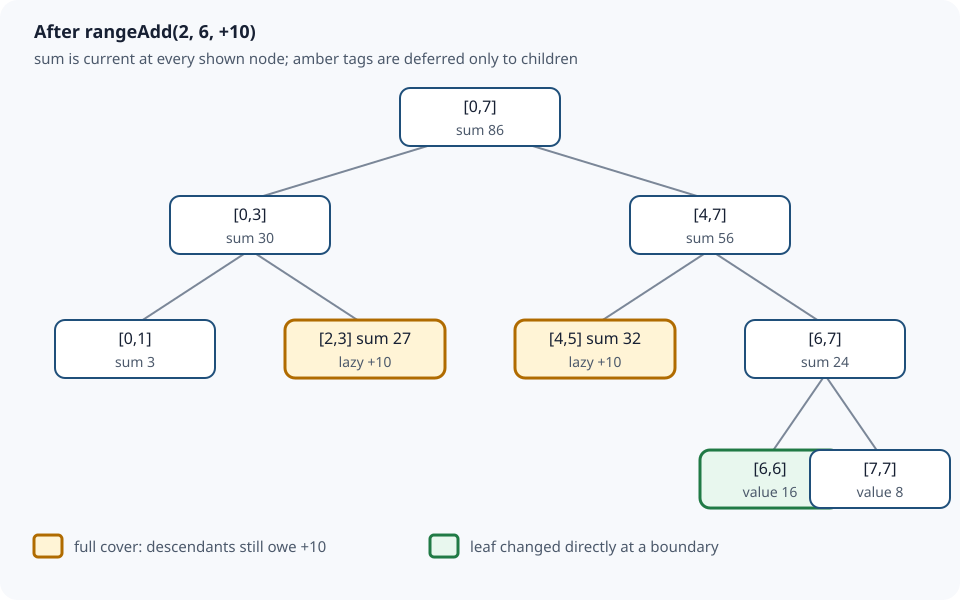

Sections
- Segment Tree with Lazy Propagation: Defer Work, Preserve Sums
- 1. Exact problem and API contract
- 2. Why a plain array or prefix sums are not enough
- 3. Representation and two invariants
- 4. The three overlap cases
- 5. Full lazy-tag state trace
- 6. Complete Java 17 implementation
- 7. Why the algorithm is correct
- 8. Derived complexity, including output cost
- 9. Choosing among related structures
- 10. Boundaries and common failures
- 11. Interview variations worth deriving
- Sources and continuation
Segment Tree with Lazy Propagation: Defer Work, Preserve Sums
Local study intake · Java source · Validation harness
This module enriches section 9 of the uploaded Advanced_Trees_FAANG_Mermaid_Study_Guide.md. Its range-add/range-sum example is the source spine. The explicit contract, four examples, invariants, proof, comparisons, diagram, production-shaped Java and independent tests are added teaching material. It is a focused module, not a second copy of the uploaded book.
1. Exact problem and API contract
Maintain a non-empty array while requests arrive in any order:
rangeAdd(left,right,delta)adds a signeddeltato every element in the inclusive, zero-based interval[left,right].rangeSum(left,right)returns the sum of that inclusive interval.
Both endpoints must be valid and left <= right. Construction copies the information into the tree, so later changes to the caller's input array do not change the data structure. Values, deltas, delta * intervalLength, and every sum must fit in signed long; Java integer arithmetic does not report ordinary overflow, so this is a precondition rather than a checked guarantee.
This is specifically a range-add/range-sum tree. A range-assignment tree needs a different lazy-tag composition rule: assignment overwrites an older assignment, while addition accumulates.
Four concrete examples
| Initial logical array | Operation | Result | Point of the example |
|---|---|---|---|
[2,1,3,4] |
rangeSum(1,3) |
8 | Query includes both endpoints. |
[2,1,3,4] |
add +5 to [1,2], then sum [0,3] |
20 | Logical array becomes [2,6,8,4]. |
[0,0,0] |
add -7 to [0,2], then sum [1,1] |
-7 | Negative updates and singleton queries work. |
[2_000_000_000,2_000_000_000] |
sum [0,1] |
4,000,000,000 | Stored sums must be long, not int. |
2. Why a plain array or prefix sums are not enough
With an ordinary array, adding to a range touches every covered element. With static prefix sums, a query is constant time, but changing one element invalidates all later prefixes. Rebuilding after every range update can be linear.
A segment tree stores an aggregate for a hierarchy of intervals. A request descends only through intervals that meet a query boundary. When an update fully covers an interval, lazy propagation changes that node's sum immediately and records one pending per-element delta for its descendants. It does not visit all leaves.

The picture deliberately separates a node's exact aggregate from its children. For example, node [2,3] has sum 27 and lazy tag +10; its leaves may still store 3 and 4. The parent answer is current even though descendant detail is deferred.
3. Representation and two invariants
For node v representing [low,high]:
tree[v]is the exact logical sum of every element in[low,high], including all updates that fully covered this node.lazy[v]is a per-element increment already included intree[v]but not yet copied into the two child nodes.
That wording prevents the most common misconception: a lazy tag is not an update missing from the current node. The current node is already correct. Only its children owe the update.
apply(v,low,high,delta) therefore performs both lines:
tree[v] += delta * (high - low + 1L);
lazy[v] += delta;
The segment length matters because an increment of 10 over two elements raises their sum by 20. Tags accumulate because consecutive additions commute: owing +4 and then -1 is the same as owing +3.
push transfers the parent's pending delta to both children, updates their sums through apply, and clears the parent tag. Pushing preserves the parent sum: the left and right length increases add to exactly the parent's length increase.
4. The three overlap cases
At every recursive node, classify its interval against the requested interval:
- No overlap: return the sum identity
0, or do nothing for an update. - Full cover: for a query, return
tree[v]; for an update, callapplyand stop descending. - Partial overlap: push any pending tag, recurse into both children, then combine.
The full-cover stop is the optimization. A wide update is represented by a small number of canonical tree intervals rather than by all affected leaves.
For a partial update, after pushing and recursion, restore the merge invariant:
tree[v] = tree[2 * v] + tree[2 * v + 1];
For a partial query, pushing is needed before inspecting children, but recomputing the parent is not: transferring a tag changes where the sum is stored, not the logical sum of the parent interval.
5. Full lazy-tag state trace
Start with [2,1,3,4,5,7,6,8], whose total is 36. Add 10 to [2,6].
| Visit | Overlap with [2,6] |
Action | Relevant state afterward |
|---|---|---|---|
[0,7] |
partial | descend | root waits for recomputation |
[0,3] |
partial | skip [0,1]; visit [2,3] |
left branch only partly changes |
[2,3] |
full | apply +10 |
tree=27, lazy=10 |
[4,7] |
partial | visit both children | — |
[4,5] |
full | apply +10 |
tree=32, lazy=10 |
[6,7] |
partial | update leaf [6,6]; skip [7,7] |
[6,6] becomes 16 |
| ancestors | — | add child sums | root becomes 86 |
The logical array is now [2,1,13,14,15,17,16,8], but leaves 2–5 need not have changed yet.
Now query [1,5]:
| Query fragment | Decision | Contribution / state change |
|---|---|---|
[0,1] |
partial | leaf 1 contributes 1 |
[2,3] |
full | return stored 27; no push needed |
[4,5] |
full | return stored 32; no push needed |
[6,7] |
outside | contribute 0 |
The result is 1 + 27 + 32 = 60.
Suppose the next request is the singleton sum [2,2]. The query partially overlaps [2,3], so push applies +10 to leaves [2,2] and [3,3], then clears lazy[2,3]. Leaf 2 returns 13. Before the push, the parent was 27; afterward its children are 13 and 14, still totaling 27. This is the central state transition to be able to explain in an interview.
6. Complete Java 17 implementation
The runnable source is LazySegmentTree.java.
import java.util.Objects;
public final class LazySegmentTree {
private final int size;
private final long[] tree;
private final long[] lazy;
public LazySegmentTree(long[] values) {
Objects.requireNonNull(values, "values");
if (values.length == 0)
throw new IllegalArgumentException("values must not be empty");
size = values.length;
tree = new long[Math.multiplyExact(4, size)];
lazy = new long[tree.length];
build(1, 0, size - 1, values);
}
public int size() { return size; }
public void rangeAdd(int left, int right, long delta) {
checkRange(left, right);
rangeAdd(1, 0, size - 1, left, right, delta);
}
public long rangeSum(int left, int right) {
checkRange(left, right);
return rangeSum(1, 0, size - 1, left, right);
}
private void build(int v, int low, int high, long[] a) {
if (low == high) { tree[v] = a[low]; return; }
int mid = low + (high - low) / 2;
build(2 * v, low, mid, a);
build(2 * v + 1, mid + 1, high, a);
tree[v] = tree[2 * v] + tree[2 * v + 1];
}
private void apply(int v, int low, int high, long delta) {
tree[v] += delta * (high - low + 1L);
lazy[v] += delta;
}
private void push(int v, int low, int high) {
if (lazy[v] == 0 || low == high) return;
int mid = low + (high - low) / 2;
apply(2 * v, low, mid, lazy[v]);
apply(2 * v + 1, mid + 1, high, lazy[v]);
lazy[v] = 0;
}
private void rangeAdd(int v, int low, int high,
int ql, int qr, long delta) {
if (qr < low || high < ql) return;
if (ql <= low && high <= qr) { apply(v, low, high, delta); return; }
push(v, low, high);
int mid = low + (high - low) / 2;
rangeAdd(2 * v, low, mid, ql, qr, delta);
rangeAdd(2 * v + 1, mid + 1, high, ql, qr, delta);
tree[v] = tree[2 * v] + tree[2 * v + 1];
}
private long rangeSum(int v, int low, int high, int ql, int qr) {
if (qr < low || high < ql) return 0;
if (ql <= low && high <= qr) return tree[v];
push(v, low, high);
int mid = low + (high - low) / 2;
return rangeSum(2 * v, low, mid, ql, qr)
+ rangeSum(2 * v + 1, mid + 1, high, ql, qr);
}
private void checkRange(int left, int right) {
if (left < 0 || right >= size)
throw new IndexOutOfBoundsException("range outside array");
if (left > right)
throw new IllegalArgumentException("left must be <= right");
}
}
The actual file has more informative exception text; the algorithm is identical. low + (high-low)/2 avoids the addition form that can overflow for large endpoints. A 4n allocation is a simple safe upper bound for this recursive layout; the exact number of tree nodes is linear but depends on how non-power-of-two intervals split.
7. Why the algorithm is correct
Base state. build stores each leaf value. Every internal node stores the sum of its two disjoint child intervals, so all interval sums are correct and every lazy tag is zero.
Full-cover update. apply adds delta * intervalLength to the node sum, exactly the logical change for that interval. Accumulating the tag records precisely what its children still owe, preserving both invariants without descending.
Partial update. push first makes both children correct and clears the parent's debt. Recursive calls correctly update the overlapping child portions; non-overlapping portions remain unchanged. Re-adding the two child sums therefore restores the exact parent sum.
Query. A no-overlap interval contributes the sum identity zero. A fully covered node returns its exact stored sum. For partial overlap, pushing makes child detail current; recursion returns the exact sums of two disjoint requested pieces. Adding them gives exactly the requested range. These cases cover every relative position, so every returned answer is correct.
8. Derived complexity, including output cost
build visits each represented node once, so it takes O(n) time and O(log n) recursion depth. The tree and lazy arrays are O(n).
At each depth, one-dimensional interval boundaries create only a constant number of partially overlapping nodes. Fully covered nodes stop. A range update or range query therefore visits O(log n) canonical-boundary nodes and takes O(log n) time, with O(log n) call-stack space in this recursive implementation.
rangeSum constructs one scalar output, so output construction is O(1). If a caller materializes the entire logical array by issuing n singleton queries, that separate output operation costs O(n log n) time and O(n) output space. A dedicated traversal that pushes tags can materialize it in O(n) time; that operation is not part of this API.
9. Choosing among related structures
| Structure | Build | Update | Range sum | Extra storage | Choose it when |
|---|---|---|---|---|---|
| Static prefix sums | O(n) | O(n) after a changed value | O(1) | O(n) | Data is effectively read-only. |
| Fenwick tree in this collection | O(n log n) as implemented | point add O(log n) | O(log n) | O(n) | You need compact dynamic prefix/range sums. |
| Ordinary segment tree | O(n) | point update O(log n) | O(log n) | O(n) | Aggregates or combinations are more general. |
| Lazy segment tree | O(n) | range add O(log n) | O(log n) | O(n) | Both updates and queries cover ranges. |
Two Fenwick trees can also support range-add/range-sum using a weighted-prefix derivation. That design is compact for sums but less direct to generalize. A lazy segment tree makes interval composition explicit and can be adapted to minima, maxima, assignments or richer node state—provided the node merge, tag application and tag composition are all re-derived together.
10. Boundaries and common failures
- Forget interval length in
apply: the node sum changes by one delta instead of one per element. - Overwrite
lazy[v]for additive updates: an older deferred addition disappears; additive tags must accumulate. - Push without updating child sums: full-cover child queries return stale aggregates.
- Recurse on partial overlap before pushing: descendants miss older updates.
- Mix inclusive and half-open intervals: boundary elements are skipped or counted twice.
- Use
0as the no-overlap identity for min over arbitrary values: sum uses 0, but min needs positive infinity or an optional result. - Assume the range-assignment tag composes like addition: assignment and addition need tag type/order information.
- Use
intfor sums, or assumelongcannot overflow. The Java Language Specification says integer operators do not signal ordinary overflow. - Share this mutable object between threads without synchronization: updates and queries are not atomic snapshots.
Test singleton/full ranges, first and last indices, negative deltas, repeated full-cover updates before a narrow query, invalid ranges, large sums, and randomized operations against an independent ordinary array.
11. Interview variations worth deriving
- Range assignment + range sum: store an optional pending assignment; it overrides older assignment and usually resets/absorbs an addition tag. Composition order matters.
- Range add + range minimum/maximum: the node aggregate shifts by
delta, notdelta * length; merge with min/max. - Affine updates: represent each tag as
x -> ax+b; compose functions in the correct chronological order and update stored sums using interval length. - First position whose prefix reaches a target: descend using child sums only when values/frequencies preserve the required monotonicity.
- Dynamic coordinates: allocate nodes on demand when the coordinate universe is huge but updates are sparse; this changes constant factors and memory behavior.
- Persistent segment tree: path-copy changed nodes to preserve historical roots. Lazy tags make persistence more delicate because pushing creates additional changed nodes.
Before coding a variation, state three algebraic pieces: the node merge operation and identity, how a tag transforms a node aggregate, and how a newer tag composes with an older pending tag. Most subtle bugs are mismatches among those three rules.
Sources and continuation
- Uploaded
Advanced_Trees_FAANG_Mermaid_Study_Guide.md, section 9 (SHA-25686cb65f3d6d0f327e5d22c03b5d587144eb11cc9ff27a5b523b298b09ad7f5b1): conceptual spine and the eight-element dry run. - Bentley and Friedman, “Data Structures for Range Searching,” ACM Computing Surveys 11(4), 1979: historical primary literature for hierarchical range-search structures; the guide's array/lazy implementation is teaching material, not copied from the paper.
- Java Language Specification 17, §4.2.2 Integer Operations: authoritative basis for the signed-integer and overflow boundary.
Next bounded source section: section 8, Trie / Prefix Tree. It should be compared against any richer canonical trie coverage before publishing; the archive's other sections remain queued rather than implicitly reviewed.